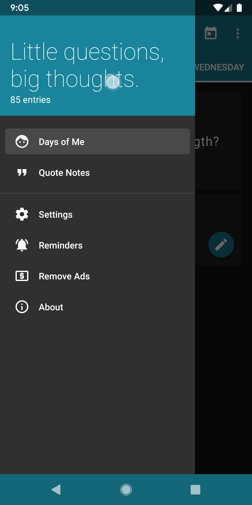
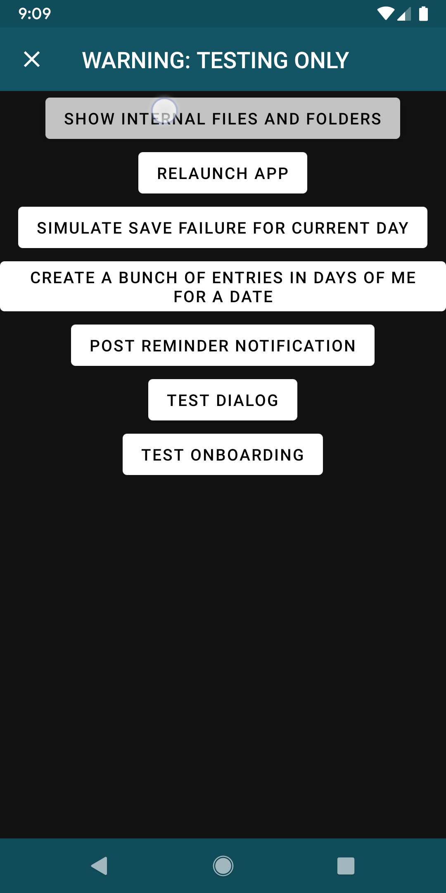
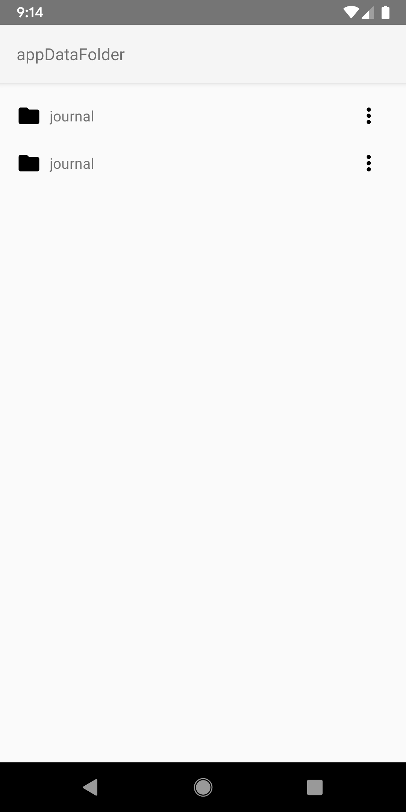
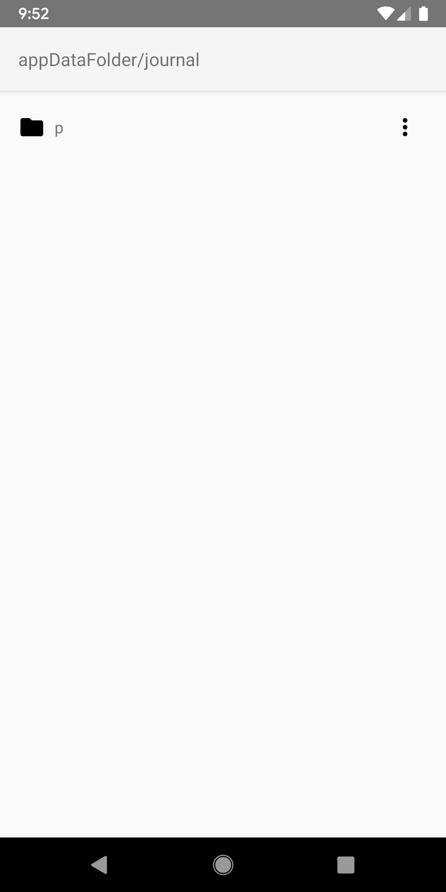
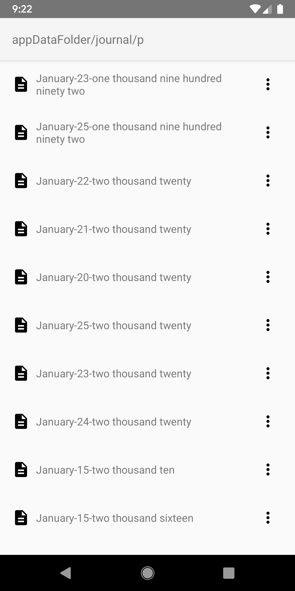
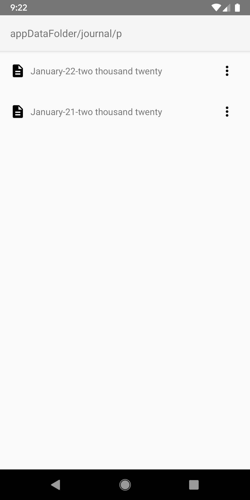

We Apologize
We are sorry for the inconvinience that this has caused. Don't worry, your entries still exist. This is just a rare bug with the app where it gets confused about where the entries are located in your Google Drive account. Since your Google Drive is private and only accessible to you, we must ask for your help in correcting the issue, in this step by step guide. Since this will involve following the instructions of this page and changing things in the app, we recommend viewing this page on a computer, while having your phone in your hand with the app open.
Step 1: Accessing the debug menu
Hidden within the app is a debug menu that is intended only for developer use. We are going to access that menu in order to fix your issue with entries not showing. To access the menu, open the navigation drawer (by swiping from the left to right, or tapping the 3 line icon in the top left of the app) and tap on the title "Little questions, big thoughts." 5 times in a row. (If you are using the Quote Notes journal, you will instead see it say "Reflecting with the greats".)

Step 2: Viewing the folders
You should now see a screen with the title "WARNING: TESTING ONLY" in big scary letters. Don't worry, you are in the right place! Please now tap on the button that says "SHOW INTERNAL FILES AND FOLDERS"

Step 3: Choosing the correct folder to delete
What you are seeing now is a basic view of the files that exist within your Google Drive account that compose your journal. The title at the top shows a "path" of which folder you are viewing (like breadcrumbs). The issue that you will see here is that there are two folders named "journal", as seen below:

The solution is to delete the extra "journal" folder, while keeping the correct one around. Please be careful with the next steps, as deleting the wrong folder will result in losing journal entries. You can tap the folders to view their contents and then press the back arrow button on your phone to navigate back to the previous folder. In order to determine which folder you need to delete, you will want to go into each of the "journal" folders by tapping on them, and then tapping on the "p" folder.

The "journal" "p" folder that you want to keep will look like the image below, with many entries.

The "journal" "p" folder which is accidental and should be deleted will look like the image below, with fewer entries.

As you can see, the "p" folder (within the "journal" folder) with fewer (or possibly zero) entries is the one we will be deleting, since it is one that was created by accident.
Step 4: Deleting the accidental folder
Once you are sure you know which "journal" folder you need to delete by looking at the contents of its "p" folder, you can navigate back to the first screen which showed two (or more) "journal" folders. Then, you can tap on the three dots icon and select "Delete". Please be sure you are deleting the right folder before doing this, as there is no way to undo this action. Note that you want to delete the entire "journal" folder and not just the "p" folder inside of it
Step 5: Restarting the app
Now that you have deleted the accidental folder, you can restart the 365 Journals app and then see all your entries once again. We have made updates to the app to fix this bug as far as we are aware, but if it happens again, please send us an email and follow these steps again. Happy journaling!